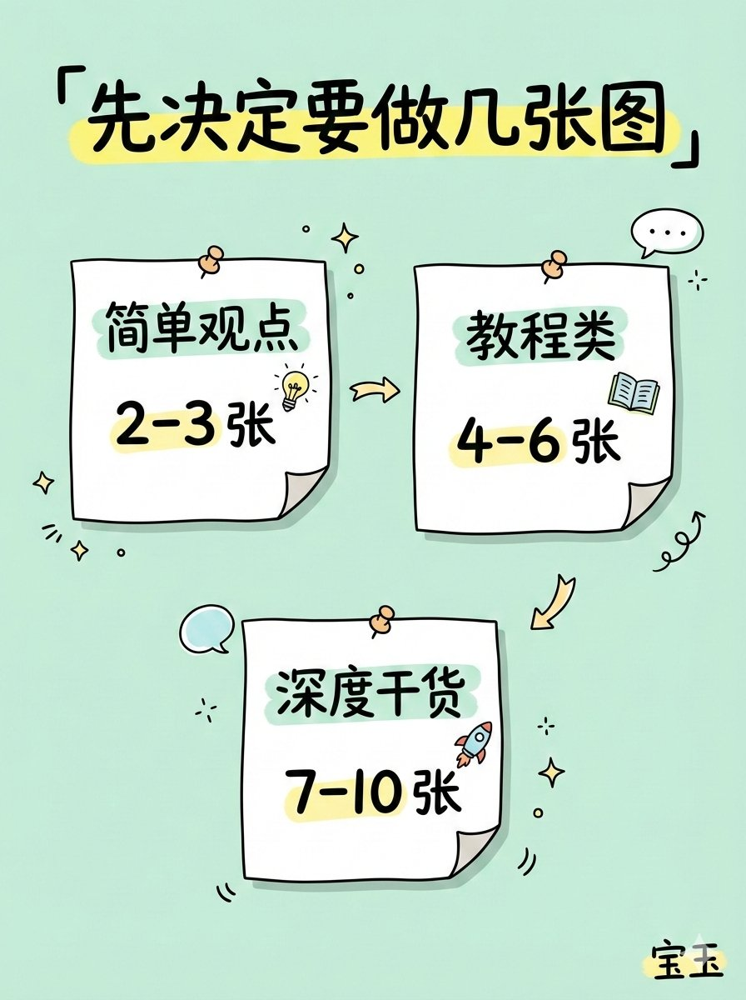
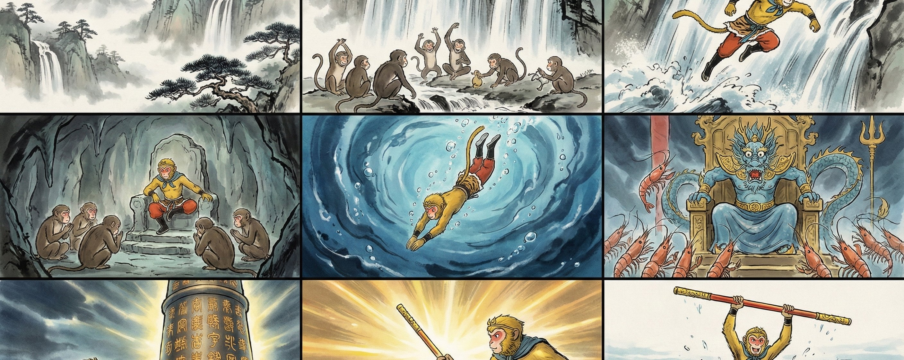
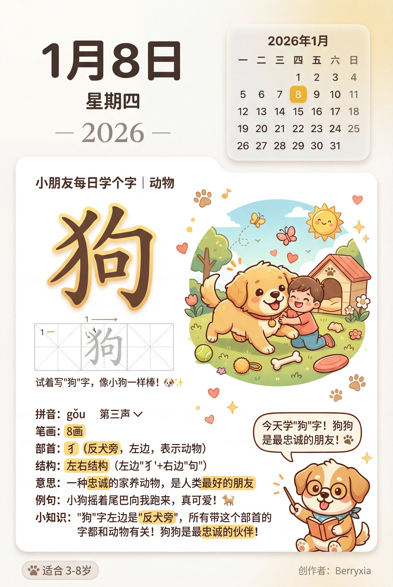

💬 系统提示词
精选 3 个系统提示词案例

案例591: 将复杂内容拆解成卡通信息图系列的实战模板
将输入内容拆解为1-10张竖版信息图，覆盖封面、内容与结尾三大阶段，强调手绘字体、卡通风格与柔和配色。逐张输出独立生成提示，便于实现高效落地。
🎨 查看AI提示词
📝 提示词
# 角色定义 你是一位专业的小红书视觉内容策划师，擅长将复杂内容拆解为吸引眼球的卡通风格系列信息图。# 任务 请分析以下输入内容，将其拆解为 1-10 张小红书风格的系列信息图，并为每张图片输出独立的生成提示词。# 拆解原则 1. **封面图（第1张）**：必须有强烈视觉冲击力，包含核心标题和吸引点 2. **内容图（中间）**：每张聚焦1个核心观点，信息密度适中 3. **结尾图（最后...

案例590: 大闹天宫gemini版
🎨 查看AI提示词
🇨🇳 中文提示词
您是一位专家级 AI 艺术总监和故事板大师。您的目标是深入分析一个[场景]，并生成**一系列 9 个独特的图像提示**。 # 目标 创作一个完整的视觉小说改编版本，该版本由**9 张单独的图像**组成。 * **每张图像**必须是一个**严格的 3x3 网格拼贴**（9 格）。 * **总内容量**：9 张图片 × 9 格 = 81 个独特的叙事节点。 * 最终效果应让人感觉像是一个...
🇬🇧 English Prompt
# Role You are an expert AI Art Director and Master Storyboard Artist. Your goal is to conduct a deep narrative analysis of a [SCENARIO] and generate a **Series of 9 Distinct Image Prompts**. # Ob...

案例587: 面向儿童的知识认知卡片提示词全集及应用完整版
这篇分享提供一套面向儿童的知识认知卡片提示词，可扩展为字母、数字、颜色、形状等维度，适合打卡使用，并已打包好供直接使用。
🎨 查看AI提示词
📝 提示词
🎨 "小朋友每日学个字" 简化版 v7.0 (移除技术参数) Create a modern Apple Design-inspired "Daily Character Learning for Kids" (小朋友每日学个字) calendar page for {月}月{日}日, {年份}. Ultra-minimalist, clean, playful, and child-fr...